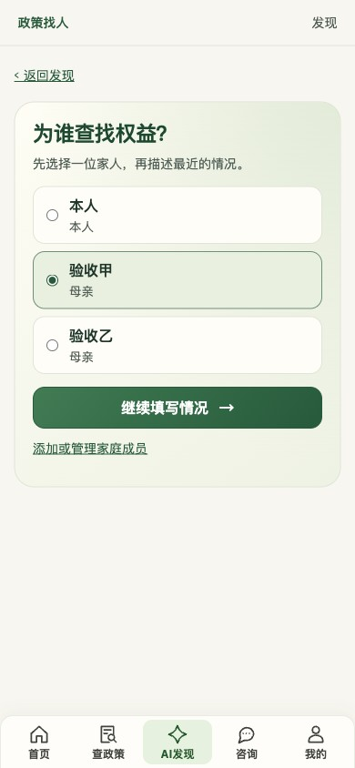
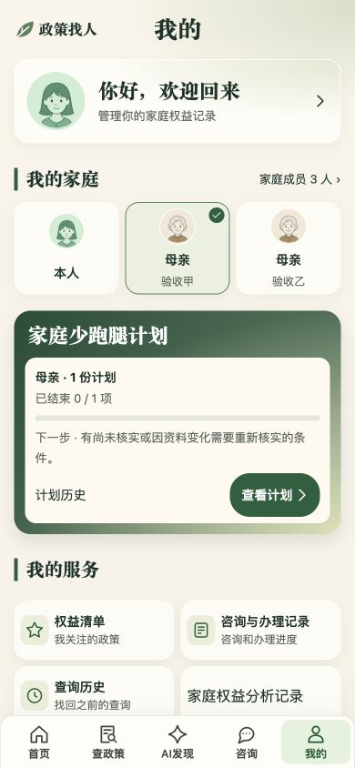
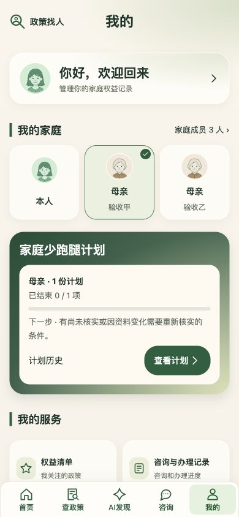

少跑腿计划
由表单式总览调整为家庭插画、进度摘要、优先事项与四步办理路线。
初版：开始优化前的 V3.3（85718fe）；最终版：已恢复原有视觉细节后的当前版本。
17 个主要页面使用同一份合成演示数据、390 × 844 手机视口，均按页面顶部原样捕获。
由表单式总览调整为家庭插画、进度摘要、优先事项与四步办理路线。
沿用初版浅绿配色，增加成员头像、选中状态和步骤层级。两版均选验收甲。


保留原来的渐变计划卡与成员色彩，补齐服务图标、卡片和入口层级。


初版缺失导航样式，首屏被放大的导航图标占据，此处保留实际原图。最终版修复导航，并加入绿色渐变、花枝和城市图案。另提供初版滚动后的内容截图。
原始截图可点击放大。演示使用隔离合成数据，真实 AI 与联网搜索质量不属于本次视觉对比结论。查询历史初版的导航样式缺失按实际保留，未为对比修饰原版。